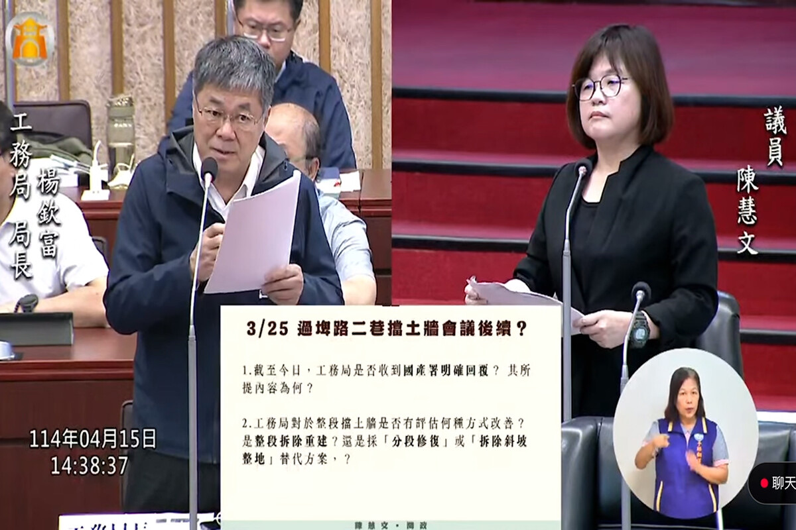

完整背景與說明
2021年6月1日，鳳山區過埤路2巷擋土牆在大雨後崩塌，道路一度中斷，市府進場緊急搶修。同年10月完成臨時鋼軌樁、加勁擋土、護欄與警示等安全措施並恢復通行；這一階段處理的是緊急通行與安全，永久擋土牆仍待後續工程。
2021年8月11日，陳慧文在市政總質詢要求市府成立專責機制，加強擋土牆支撐、改善替代道路，並釐清國有財產署與市府的權責。此後她跨屆以提案、質詢持續追蹤；地方里長、居民、許智傑立委及相關機關也曾參與協調。
2025年1月17日，高雄市政府工務局邀集國產署南區分署、水利局、大寮區及鳳山區公所協調，會議結論請土地管理者國產署研議先行復原，再向水保義務人求償。2025年市府與國產署持續協調，至年底國產署原則同意工程概算及代辦施作方向。
2026年4月9日工務部門質詢時，陳慧文再次追問工程進度。道路養護工程處回應，國產署已編列500萬元，當時預定最快4月底進場，並表示希望在汛期前完成。4月28日後續召開施工前協調，5月的工程準備則包含道路封閉、電桿遷移與細部設計等事項。
工程後續並未依原定時程直接完成進場。7月29日會勘確認兩處台電電桿與擋土牆工程衝突，8月6日道路養護工程處紀錄指出，電桿移設延宕已影響工程進度，並要求台電於8月30日前完成移設。截至2026年9月17日，工程仍在施工前協調與障礙排除階段，永久擋土牆尚未完工。
{kind=link}

推動歷程
重要進度
大雨造成擋土牆崩塌
過埤路2巷擋土牆在大雨後崩塌、道路中斷，市府進場緊急搶修。
市政總質詢要求建立專責處理機制
陳慧文要求市府加強擋土牆支撐、改善替代道路，並釐清國產署與市府責任。
完成臨時安全措施並恢復通行
市府完成臨時加固、護欄與警示等安全措施，恢復道路通行；永久修復仍未完成。
市府跨機關協調永久修復責任
工務局邀集國產署南區分署、水利局及鳳山、大寮區公所協調，請土地管理者國產署研議先行復原。
總質詢再追永久修復進度
陳慧文再次要求市府加速改善過埤路2巷擋土牆，持續追蹤永久修復方案。
國產署原則同意工程概算與代辦方向
跨機關協調後，國產署南區分署原則同意工程概算及由市府代辦施作的方向。
道工處答覆國產署已編列500萬元
工務部門質詢中，道工處表示國產署已編列500萬元，當時預定最快4月底進場，並以汛期前完成為目標。
進入施工前協調
施工前協調進一步處理道路封閉、電桿遷移與細部設計等工程準備事項。
電桿移設延宕影響工程進場
現場兩處台電電桿與工程衝突；道路養護工程處紀錄指出移設延宕已影響進度，要求台電於8月30日前完成移設。